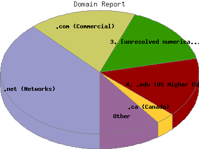

Report generated by Analog 5.91beta1 and Report Magic 2.21
|
Web Server Statistics for "Harish Narayanan (hnarayan) - May 2004" Report generated by Analog 5.91beta1 and Report Magic 2.21 |
The Domain Report identifies the top origins of visitors to this site. This is determined by the suffix of their domain name. Use this information carefully as this is based on where their domain name is registered and may not always be an accurate identifier of the actual geographic location of this visitor. For example, while most .com domain names are from the United States, there are a growing number of .com domain names that exist outside the United States.
This report shows all results. This report is sorted by number of requests.

| Domain Name | Number of requests | Number of bytes transferred | Percentage of the bytes | Percentage of the requests | |
|---|---|---|---|---|---|
| 1. | .net (Networks) | 1,331 | 24.806 MB | 30.20% | 38.29% |
| 2. | .com (Commercial) | 610 | 24.273 MB | 29.55% | 17.55% |
| aol.com (America Online) | 19 | 435.234 KB | 0.52% | 0.55% | |
| 3. | [unresolved numerical addresses] | 545 | 11.266 MB | 13.71% | 15.68% |
| 4. | .edu (US Higher Education) | 537 | 12.584 MB | 15.32% | 15.45% |
| umich.edu | 310 | 8.122 MB | 9.89% | 8.92% | |
| engin.umich.edu | 209 | 5.808 MB | 7.07% | 6.01% | |
| ummu.umich.edu | 67 | 2.141 MB | 2.61% | 1.93% | |
| utah.edu | 15 | 1.542 MB | 1.88% | 0.43% | |
| asu.edu | 27 | 745.139 KB | 0.89% | 0.78% | |
| 5. | .ca (Canada) | 106 | 987.904 KB | 1.17% | 3.05% |
| 6. | .sa (Saudi Arabia) | 44 | 448.894 KB | 0.53% | 1.27% |
| 7. | .in (India) | 36 | 574.378 KB | 0.68% | 1.04% |
| 8. | .it (Italy) | 35 | 2.662 MB | 3.24% | 1.01% |
| 9. | .pl (Poland) | 25 | 133.645 KB | 0.16% | 0.72% |
| 10. | .br (Brazil) | 21 | 497.619 KB | 0.59% | 0.60% |
| 11. | .nl (Netherlands) | 21 | 194.885 KB | 0.23% | 0.60% |
| 12. | .gov (US Government) | 21 | 215.152 KB | 0.26% | 0.60% |
| 13. | .de (Germany) | 20 | 406.815 KB | 0.48% | 0.57% |
| 14. | .no (Norway) | 20 | 384.295 KB | 0.46% | 0.57% |
| 15. | .uk (United Kingdom) | 16 | 91.596 KB | 0.11% | 0.46% |
| 16. | .org (Non Profit Making Organizations) | 16 | 79.133 KB | 0.09% | 0.46% |
| 17. | .fr (France) | 14 | 494.365 KB | 0.59% | 0.40% |
| 18. | .us (United States) | 10 | 52.992 KB | 0.06% | 0.29% |
| 19. | .arpa (Arpanet) | 7 | 34.638 KB | 0.04% | 0.20% |
| 20. | .be (Belgium) | 6 | 653.519 KB | 0.78% | 0.17% |
| 21. | .il (Israel) | 6 | 31.566 KB | 0.04% | 0.17% |
| 22. | .dk (Denmark) | 5 | 28.324 KB | 0.03% | 0.14% |
| 23. | .au (Australia) | 4 | 186.816 KB | 0.22% | 0.12% |
| 24. | .is (Iceland) | 4 | 327.311 KB | 0.39% | 0.12% |
| 25. | .ee (Estonia) | 3 | 27.045 KB | 0.03% | 0.09% |
| 26. | .cy (Cyprus) | 3 | 23.256 KB | 0.03% | 0.09% |
| 27. | .hk (Hong Kong) | 2 | 766.871 KB | 0.91% | 0.06% |
| 28. | .jp (Japan) | 2 | 8.923 KB | 0.01% | 0.06% |
| 29. | .tg (Togo) | 2 | 8.923 KB | 0.01% | 0.06% |
| 30. | .se (Sweden) | 2 | 41.068 KB | 0.05% | 0.06% |
| 31. | .fi (Finland) | 1 | 2.522 KB | 0.00% | 0.03% |
| 32. | .ch (Switzerland) | 1 | 6.841 KB | 0.01% | 0.03% |
This report was generated on August 5, 2004 15:50.
Report time frame May 1, 2004 00:57 to May 31, 2004 23:07.
| Web statistics report produced by: | |
 Analog 5.91beta1 Analog 5.91beta1 |  Report Magic 2.21 Report Magic 2.21 |